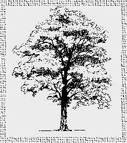

The following plants typically grow well with the root zone of the black walnut:
Ajuga reptans, bugleweed Alcea rosea, hollyhock Asarum europaeum, european wild ginger Astilbe Campanula spp., the bellflowers Chrysanthemum, hardy chrysanthemum Doronicum, leopards bane Dryopteris cristata, crested wood fern Galium odoratum, sweet woodruff Geranium robertianum, herb robert Geranium sanquineum, cranesbill Helianthus tuberosus, Jerusalem artichoke Hemerocallis fulva, common daylily Heuchera x brizoides Pluie de Feu, coral bells Hieracium aurantiacum, orange hawkweed Hosta fortunei, Glauca Hosta lancifolia Hosta marginata Hosta undulata Variegated Hydrophyllum virginianum, virginia waterleaf Iris sibirica, siberian iris Monarda didyma, bee balm Monard fistulosa, wild bergamot Oenothera fruticosa, sundrops Onoclea sensibilis, sensitive fern Osmunda cinnamomea, cinnamon fern Phlox paniculata, summer phlox Polemonium reptans, jacobs ladder Polygonatum commutatum, great solomon's seal Primula x polyantha, polyanthus primrose Pulmonaria, lungwort Rosa banksiae, Lady Banks' rose Sanquinaria canadensis, bloodroot Sanquinaria canadensis multiplex, double-flowered bloodroot Sedum acre, gold moss Sedum spectabile, showy stonecrop Stachys byzantina, lamb's ear Tradescantia virginiana, spiderwort Trillium cernuum, nodding trillium Trillium grandiflorum, white wake-robin Uvularia grandiflora, big merrybells Viola canadensis, canada violet Viola sororia, woolly blue violet
Chionodoxa luciliae, glory of the snow Crocus Endymion hispanicus, spanish bluebell Eranthis hyemalis, winter aconite Galanthus nivalis, snowdrop Hyacinthus, city of haarlem Muscari botryoides, grape hyacinth Narcissus Scilla siberica, blue squill Tulipa Darwin Tulipa Parrot Tulipa Greigii
Acer palmatum, japanese maple Acer palmatum dissectum, cutleaf japanese maple Catalpa bignonioides, common catalpa Tsuga canadensis, canadian hemlock
Clematis, red cardinal Daphne mezereum, february daphne Forsythia suspensa, weeping forsythia Hibiscus syriacus, rose of sharon Lonicera tatarica, tartarian honeysuckle Parthenocissus quinquefolia, virginia creeper Rhododendron periclymeniodes, pinxterbloom Rhododendron exbury hybrids, gibraltar and balzac
Begonia, fibrous cultivars and tuberous cv nonstop Calendula officinalis, pot marigold Ipomoea heavenly blue, morning glory Viola cornuta, horned violet Viola x wittrockiana, pansy Courtesy of the American Horticultural Society, Box 0105, Mount Vernon, VA 22121
In addition to the above, I have had good results with Achillea ptarmica
(Sneezewort), Chrysanthemum leucanthemum (Oxeye daisy), Datura metel
(thornapple), Hypericum sp. (St. Johnswort), Leonurus marrubiastrum, and
Rhamnus sp. (buckthorn) since many weeds will grow anywhere.
The following is excerpted from Ohio State University Extension
Factsheet HYG-1148-93
Richard C. Funt
Jane Martin
The roots of Black Walnut (Juglans nigra L.) and Butternut (Juglans cinerea L.) produce a substance known as juglone (5-hydroxy-alphanapthaquinone). Persian (English or Carpathian) walnut trees are sometimes grafted onto black walnut rootstocks. Many plants such as tomato, potato, blackberry, blueberry, azalea, mountain laurel, rhododendron, red pine and apple may be injured or killed within one to two months of growth within the root zone of these trees. The toxic zone from a mature tree occurs on average in a 50 to 60 foot radius from the trunk, but can be up to 80 feet. The area affected extends outward each year as a tree enlarges. Young trees two to eight feet high can have a root diameter twice the height of the top of the tree, with susceptible plants dead within the root zone and dying at the margins.
Not all plants are sensitive to juglone. Many trees, vines, shrubs, groundcovers, annuals and perennials will grow in close proximity to a walnut tree. Certain cultivars of "resistant" species are reported to do poorly. Black walnut has been recommended for pastures on hillsides in the Ohio Valley and Appalachian mountain regions. Trees hold the soil, prevent erosion and provide shade for cattle. The beneficial effect of black walnut on pastures in encouraging the growth of Kentucky bluegrass (Poa pratensis L.) and other grasses appears to be valid as long as there is sufficient sunlight and water.
Gardeners should carefully consider the planting site for black walnut, butternut, or persian walnut seedlings grafted to black walnut rootstock, if other garden or landscape plants are to be grown within the root zone of mature trees. Persian walnut seedlings or trees grafted onto Persian walnut rootstocks do not appear to have a toxic effect on other plants.
Horses may be affected by black walnut chips or sawdust when they are used for bedding material. Close association with walnut trees while pollen is being shed (typically in May) also produce allergic symptoms in both horses and humans. The juglone toxin occurs in the leaves, bark and wood of walnut, but these contain lower concentrations than in the roots. Juglone is poorly soluble in water and does not move very far in the soil.
Walnut leaves can be composted because the toxin breaks down when exposed to air, water and bacteria. The toxic effect can be degraded in two to four weeks. In soil, breakdown may take up to two months. Black walnut leaves may be composted separately, and the finished compost tested for toxicity by planting tomato seedlings in it. Sawdust mulch, fresh sawdust or chips from street tree prunings from black walnut are not suggested for plants sensitive to juglone, such as blueberry or other plants that are sensitive to juglone. However, composting of bark for a minimum of six months provides a safe mulch even for plants sensitive to juglone.
